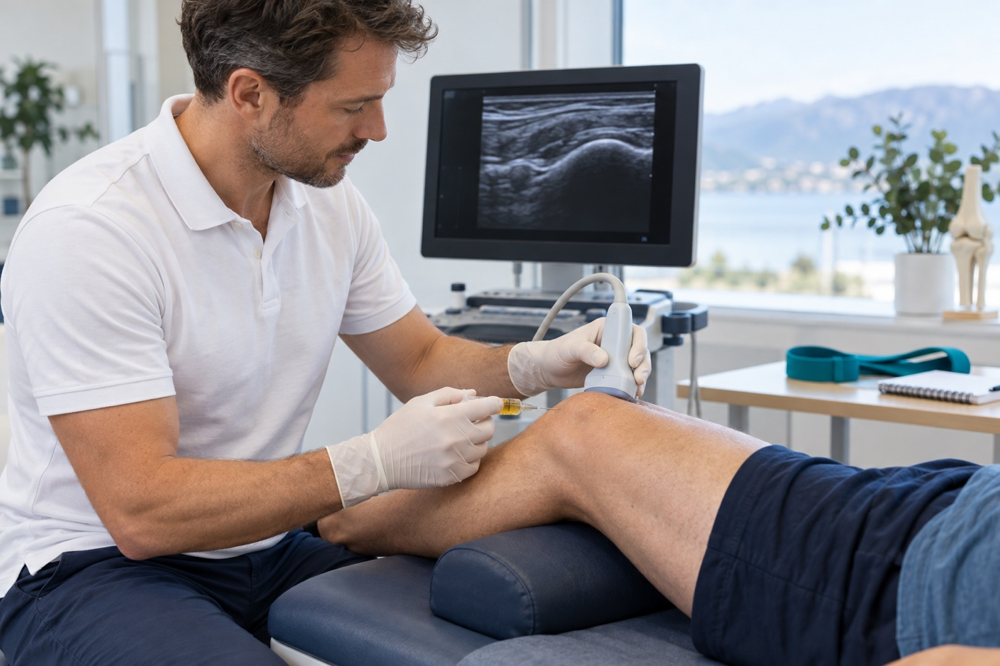

Clinical insight
PRP in Musculoskeletal Care – When Does It Work?
PRP is not one standardised product, nor does it work equally well for every condition. Outcomes depend on what is being treated, what the preparation actually contains, whether the intended structure is reached and whether the injection is integrated into a considered rehabilitation plan.

The short answer: it depends
PRP, or platelet-rich plasma, is prepared from a patient’s own blood. After centrifugation, a plasma component containing concentrated platelets and numerous signalling proteins is used. The aim is not to “glue” damaged tissue together, but to influence the local biological environment so that pain, function and load tolerance may improve.
The question “does PRP work?” is therefore too broad. PRP for mild knee osteoarthritis, chronic Achilles tendinopathy and tennis elbow represent three different clinical questions. Platelet concentration, leukocyte content, volume, activation, number of injections and treatment intervals also vary. Two syringes both called PRP may have different biological compositions.
What the new expert consensus actually shows
In 2026, 24 international experts assessed 77 statements about orthobiologic treatment through three Delphi rounds. In the final round, 60 of 62 statements met the predefined consensus threshold. Agreement was reached in categories including PRP for knee, hip and shoulder osteoarthritis, Achilles tendinopathy, lateral epicondylitis, rotator cuff tendinopathy and augmentation of meniscus repair.
This matters, but it must be interpreted correctly. A Delphi consensus shows what an expert panel can agree on after a structured process; it does not measure treatment efficacy like a randomised placebo-controlled trial. Many statements retained qualifying language because preparation, dose and indication-specific efficacy remain uncertain. The panel called for standardisation of production and quality control, and did not reach consensus on every form of rotator cuff augmentation or autologous cell-based treatment.
Consensus is not a seal of approval for every PRP injection
The agreement supports responsible, indication-specific use. It does not mean that every diagnosis has equally strong evidence, that every PRP preparation is equivalent, or that injection should replace assessment and rehabilitation.
What our Frontiers review found
In a peer-reviewed narrative review in Frontiers in Medicine, which I co-authored with Andreas P. Diamantopoulos and Marius Molund as first author, we assessed clinical trials and systematic reviews published through July 2025. The review suggests that PRP may be a reasonable second-line option for selected patients with mild-to-moderate knee or hip osteoarthritis, plantar fasciopathy, degenerative rotator cuff tendinopathy and gluteal or trochanteric tendinopathy when structured first-line care has not produced sufficient progress.
Benefits appear more often in comparisons with corticosteroid or hyaluronic acid than with placebo. In knee osteoarthritis, a recent placebo-controlled meta-analysis found a weak average effect on pain and function in the first few months, but no clear effect at 12 months. The RESTORE trial found no significant difference from saline for pain or cartilage loss after one year. This is why I do not describe PRP as proven disease-modifying treatment or as a way to “regrow cartilage”.
The tendon evidence is also diagnosis-specific. PRP may last longer than corticosteroid for some conditions, but a meta-analysis of 33 randomised trials of ultrasound-guided PRP found mostly no clear differences from control treatment for tennis elbow, plantar fasciopathy, Achilles, rotator cuff or patellar tendinopathy. Our review concluded that PRP should not be offered as an alternative to evidence-based rehabilitation for chronic midportion Achilles tendinopathy. Placebo-controlled evidence also challenges routine use for tennis elbow and ankle osteoarthritis.
When can PRP be considered second-line care?
For me, second-line does not mean “the next treatment on the list”, nor that every form of exercise must have been exhausted. It means the diagnosis is sufficiently clear, a relevant and adequately dosed first-line programme has been tried for long enough, and limited progress has been assessed systematically. Was the exercise directed at the right tissue and function? Was the load appropriate? Was the plan genuinely achievable? Are sleep, illness, medication or other factors affecting recovery and adherence?
PRP may be considered when pain still limits activity and progression, the research is reasonably relevant to the diagnosis, and the patient understands cost, expected timeline and uncertainty. Benefit is not usually immediate; in positive studies it often develops over 8–16 weeks. Serious illness, local or systemic infection and certain blood- or medication-related factors may alter the decision and must be clarified before treatment.
Ultrasound supports precision – but does not create efficacy
Diagnostic ultrasound can help distinguish a joint, tendon, bursa and other potential pain sources, and identify fluid, tissue change or an injury that requires a different plan. During injection, the needle tip can be followed in real time so the preparation is placed in or around the agreed target while important vessels and nerves are avoided.
Accurate placement is good procedural quality, but it must not be confused with proven clinical efficacy. A perfectly placed injection may not help when the diagnosis is wrong, the indication is weak or rehabilitation is absent. Ultrasound findings must always be interpreted alongside the history, clinical examination and function.
Exercise and adherence are part of the treatment
PRP provides a biological signal; exercise provides a mechanical signal. In osteoarthritis and tendinopathy, graded loading remains the foundation for strength, capacity and confident return to activity. A recent meta-analysis found better pain outcomes when PRP and exercise were combined than with either treatment alone in knee osteoarthritis, but study quality was moderate and certainty of evidence was low to very low. A separate randomised trial found no benefit of the combination over exercise alone, and exercise outperformed PRP alone on several functional outcomes.
The correct message is therefore neither that PRP makes exercise unnecessary nor that the combination is always superior. For some people, an injection may create a window in which loading becomes more manageable. Outcomes then depend on a realistic plan, appropriate follow-up and the patient’s opportunity to follow it. “Compliance” should not become blame; if the plan is not completed, dose, complexity, pain response, time and practical barriers should be adjusted.
What is actually in the syringe?
Quality involves more than sterile technique. The preparation should be describable: blood volume, centrifugation, final volume, platelet concentration, leukocytes and red blood cells, any activation and the planned number of doses. A systematic review found a possible dose–response relationship in knee osteoarthritis and suggested better outcomes above a total dose of ten billion platelets, but this is not a universal threshold for every tissue or diagnosis.
Nor is there good support for one identical protocol for everyone. Leukocyte-poor PRP is often preferred intra-articularly, while other formulations have been proposed for selected tendon disorders. Advice about fixed pauses from NSAIDs, corticosteroids or other medicines is based partly on laboratory findings and consensus rather than robust clinical time limits. Medication, bleeding risk and comorbidity should therefore be assessed individually and, when needed, discussed with a physician rather than managed through blanket stopping rules.
How I work
I start with the clinical history, examination and a decision on whether imaging is needed. Diagnostic ultrasound is used when it can clarify the target or change treatment choice. Before considering PRP, we review the diagnosis, what has already been tried, the quality of the exercise programme, expected benefit, uncertainty, cost and alternatives. When the indication is appropriate, the injection is performed under sterile conditions with ultrasound guidance. At the same time, we agree on a specific, graded rehabilitation plan with measurable functional goals and a date for reassessment. Lack of progress triggers a new assessment of the diagnosis and strategy – not an automatic series of further injections.
Sources
- Kunze KN et al. “An International Expert Consensus Statement Defining the Best Practices and Areas of Uncertainty Concerning the Use of Orthobiologics.” Journal of Bone and Joint Surgery. 2026;108(17):1340–1351. doi:10.2106/JBJS.26.00723. Primary source. Source.
- Litsos S, Diamantopoulos AP, Molund M. “Platelet-rich plasma in the management of musculoskeletal disorders: a narrative review of clinical evidence and practical considerations.” Frontiers in Medicine. 2026;13:1920226. doi:10.3389/fmed.2026.1920226. Source.
- Masiello F et al. “Ultrasound-guided injection of platelet-rich plasma for tendinopathies: a systematic review and meta-analysis.” Blood Transfusion. 2023;21(2):119–136. doi:10.2450/2022.0087-22. Source.
- Dasdemir KA, Karatas N. “The effect of combined platelet-rich plasma and exercise on pain and function in knee osteoarthritis: a systematic review and meta-analysis of randomized controlled trials.” Disability and Rehabilitation. 2026. doi:10.1080/09638288.2026.2674613. Source.
- Karaborklu Argut S et al. “Does the Combination of Platelet-rich Plasma and Supervised Exercise Yield Better Pain Relief and Enhanced Function in Knee Osteoarthritis? A Randomized Controlled Trial.” Clinical Orthopaedics and Related Research. 2024;482(6):1051–1061. doi:10.1097/CORR.0000000000002993. Source.
- Berrigan W et al. “The Effect of Platelet Dose on Outcomes after Platelet Rich Plasma Injections for Musculoskeletal Conditions: A Systematic Review and Meta-Analysis.” Current Reviews in Musculoskeletal Medicine. 2024;17(12):570–588. doi:10.1007/s12178-024-09922-x. Source.
- Auroux M et al. “Efficacy of intra-articular platelet-rich plasma compared with placebo in knee osteoarthritis: A systematic review and meta-analysis.” Joint Bone Spine. 2025;92(6):105947. doi:10.1016/j.jbspin.2025.105947. Source.
- Bennell KL et al. “Effect of Intra-articular Platelet-Rich Plasma vs Placebo Injection on Pain and Medial Tibial Cartilage Volume in Patients With Knee Osteoarthritis: The RESTORE Randomized Clinical Trial.” JAMA. 2021;326(20):2021–2030. doi:10.1001/jama.2021.19415. Source.
Topics
- PRP
- Platelet-rich plasma
- Osteoarthritis
- Tendinopathy
- Ultrasound guidance
- Rehabilitation
- Exercise